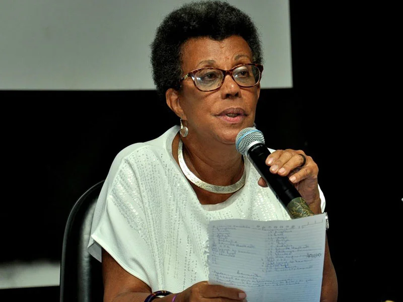

Exposição Consciência Negra
Ciência, Educação e Literatura

Ana Célia da Silva
(Salvador, Bahia, 1940–presente)
Nascida na Bahia, Ana Célia da Silva destacou-se como educadora, pesquisadora e militante histórica do movimento negro desde a segunda metade do século XX. Seu trabalho acadêmico foi fundamental para combater estereótipos raciais nos livros didáticos e consolidar a educação antirracista no país.
Obras e Projetos de Destaque
- Obras Seminais sobre o Livro Didático: Autora dos livros referenciais A Discriminação do Negro no Livro Didático (1995) e Desconstruindo a Discriminação do Negro no Livro Didático (2001), pesquisas fundamentais que desvelaram cientificamente o racismo institucional nos materiais escolares brasileiros.
- Fundação do Movimento Negro Unificado (MNU): Cofundadora do MNU na Bahia (1978), liderando mobilizações históricas em defesa da cidadania e da valorização cultural da população negra.
- Pioneirismo na Lei 10.639/2003: Criou o primeiro Grupo de Trabalho em Educação voltado ao ensino da história e cultura afro-brasileira nas redes públicas de Salvador, gerando a base pedagógica da futura Lei Federal 10.639/2003.
- Formação Docente Antirracista: Desenvolveu programas de extensão e pós-graduação em relações étnico-raciais e currículo emancipatório como professora titular da UNEB e pesquisadora da UFBA.